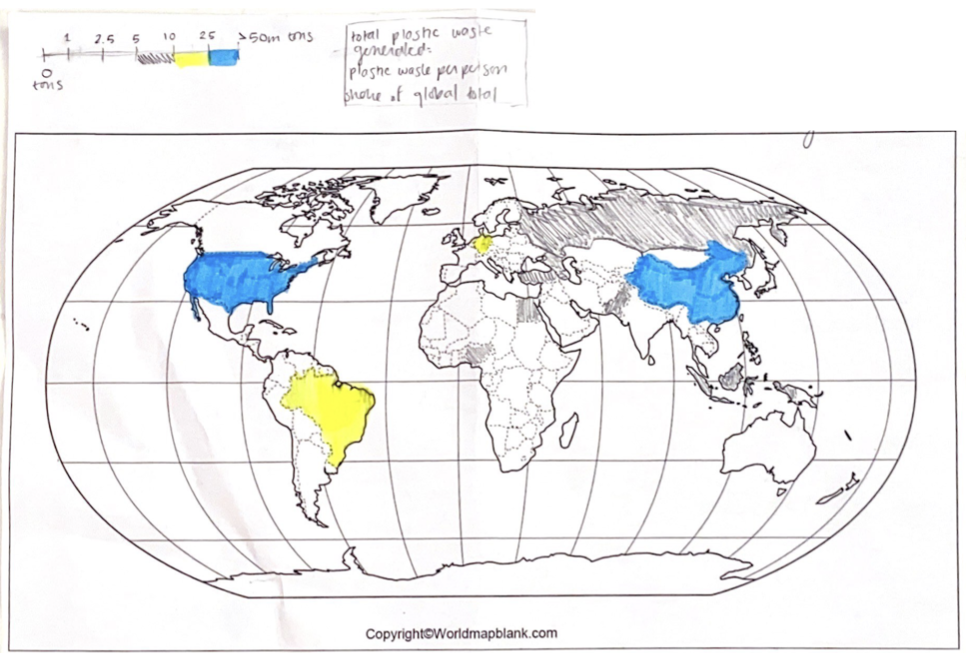
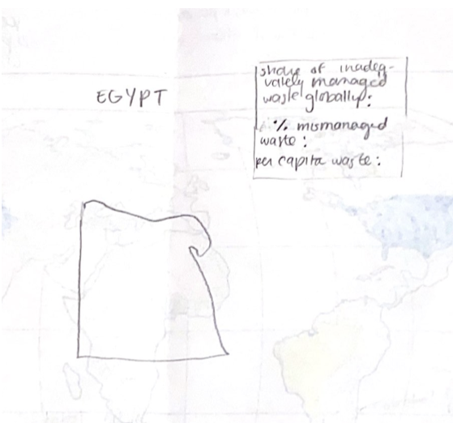

Global Plastic Waste Infographic
Definitions:
- Mismanaged plastic waste: plastic waste that is not formally managed. For example, littered waste, and waste in dumps or open, uncontrolled landfills that could leak into the ocean.
Erin's Wireframe Sketch:


Evaluation:
Achievability:
- This wireframe seems pretty achievabile. While it sets a plan that engages meaninfully with the data, it doesn't overcomplicate things.
Understandability:
- Modeling: the model is accurate and the color coded scale allows readers to develop a conceptual model of the system. On the down side, the microsummary does nto include enough information for the reader to develop a conceptual understanding of the system- while the map is there, it doesn't serve any real purpose in the microsummary. Maybe the microsummary shouldn't include a map at all. Perhpas something like a bar chart or pie chart would be more effective in conveying information than the bullet points and country map sketched out here.
- Accuracy: while the macrosummary model is accurate because the map is to scale and the data is correct, it doesn't include a lot of information.
- Visibility: not every country is color coded or highlighted on the macrosummary map, which means that important elements of the system are excluded from the design.
- Consistency + simplicity: though the macrosummary might have benfitted from more signifiers, the infographic is simple to interact with regardless of skill level or knowledge of the system.
Usability:
- Flexibility: our infographic doesn't cater to a variety of individual preferences and abilities nor does the level of interaction with the infographic vary based on user experience.
- Ease: both the macrosummary and microsummary pages can be navigated with relative ease.
Discoverability:
- Affordances + signifiers: though there are several affordances within the infographic, they aren't very well signified in either the macro or microsummary pages.
- Constraints: the constraints are clear because one wouldn't be able to interact with the infographic in an unwanted way because of the layout of the map.
- Mapping: the mapping needs a lot of work! For example, how are the macrosummary and microsummary connected within the system?